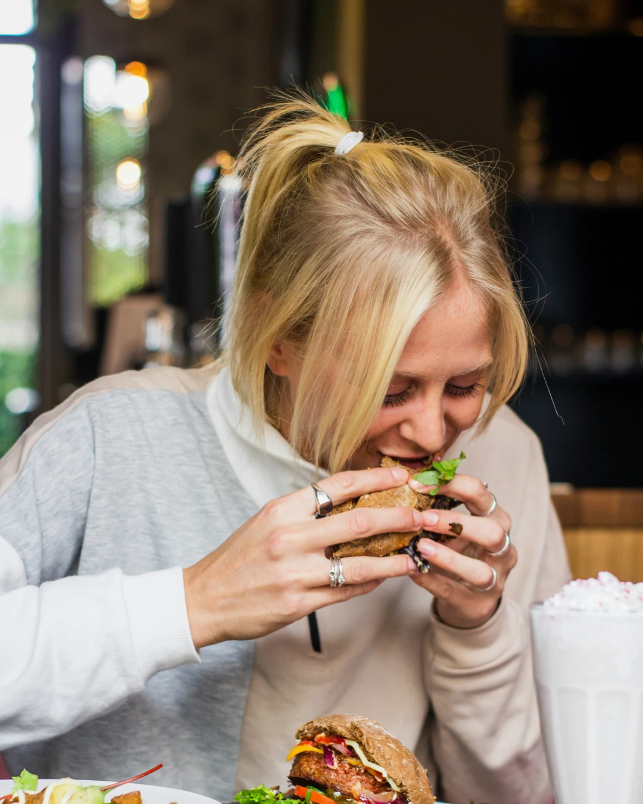
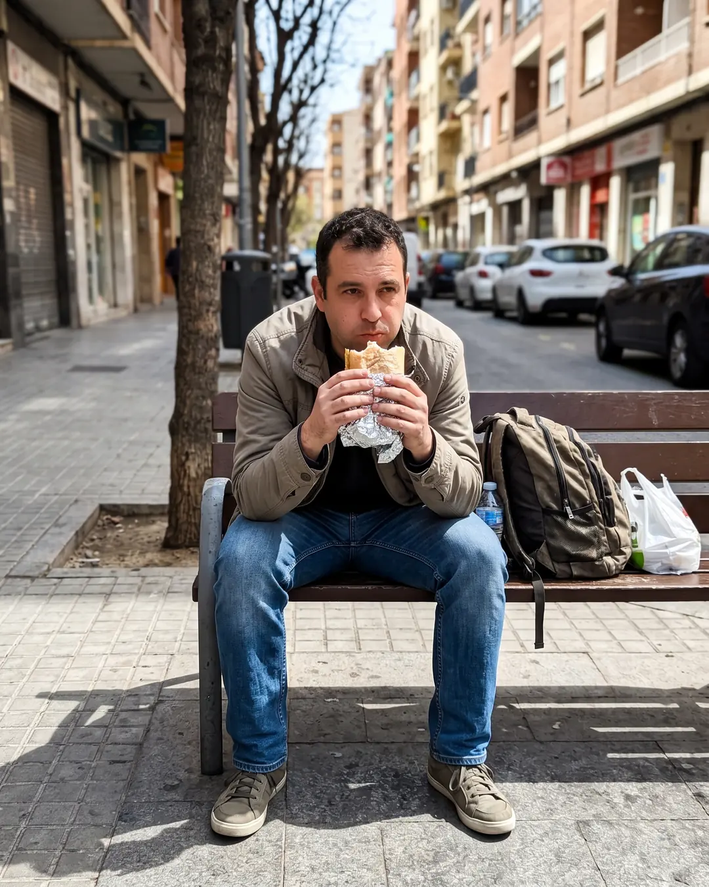
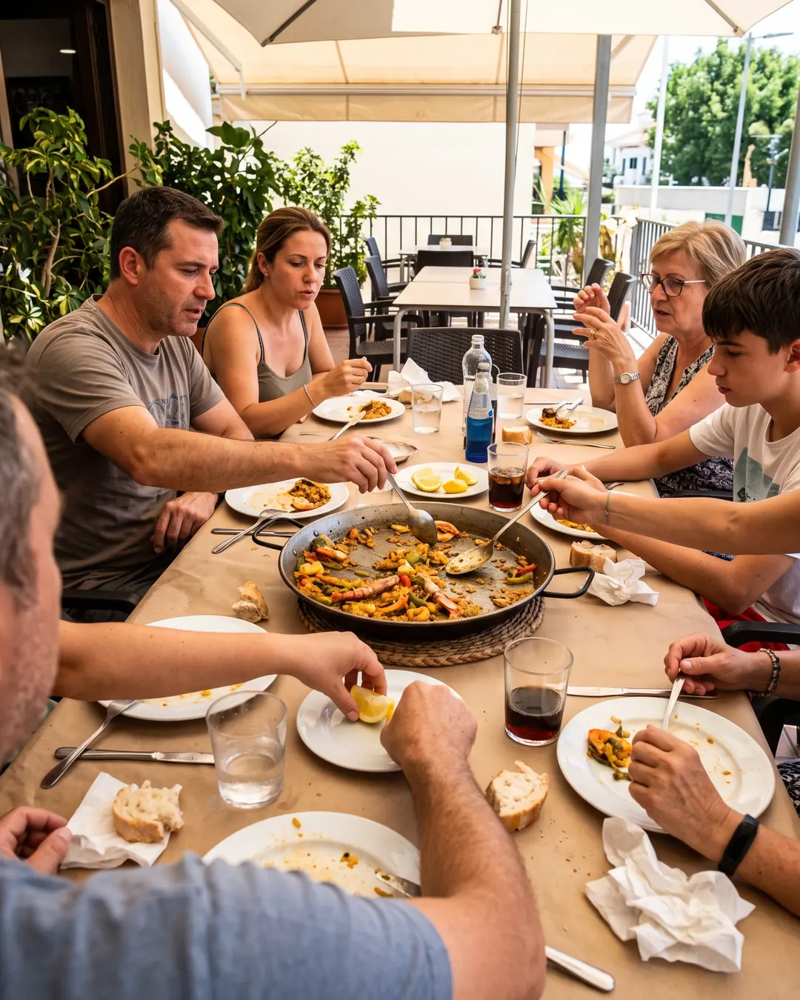
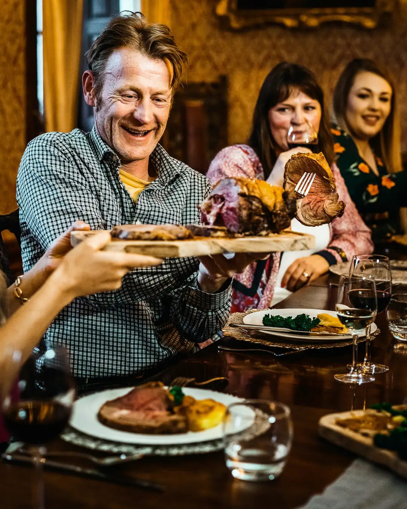
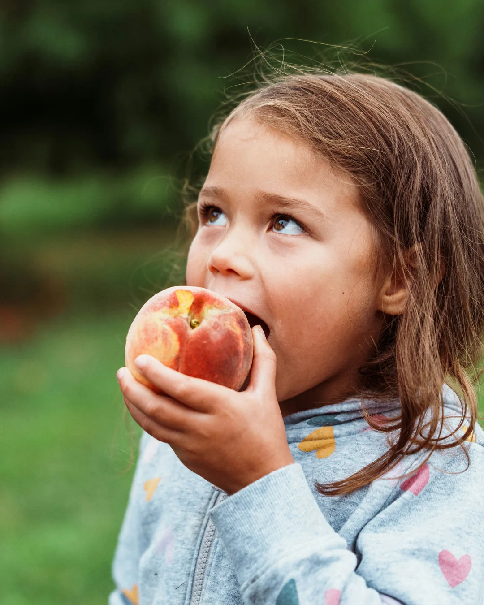

Caso n.º 3 · Gente comiendo
Imágenes
-

REAL
Fotografía real
-

IA
La confesión del sospechoso
Un hombre de unos 40 años comiendo un bocadillo en un banco de la calle a mediodía, masticando, sin darse cuenta de la foto.
-

IA
La confesión del sospechoso
Una familia comiendo paella en una terraza en verano, foto hecha por alguien sentado a la mesa, con brazos cruzándose para coger comida.
-

REAL
Fotografía real
-

REAL
Fotografía real
¿Dato o Bulo?
-
DATO «Existe un queso tradicional que se come con larvas vivas de mosca dentro.»
Es el casu marzu, de la isla italiana de Cerdeña.
- Su nombre significa «queso podrido» en sardo.
-
DATO «En Singapur no es legal vender chicle.»
Su venta está prohibida desde 1992 para mantener limpias las calles y evitar averías en el transporte público.
- Desde 2004 hay una excepción para chicles terapéuticos.
- Se venden en farmacias.
-
DATO «Una persona logró comerse más de 80 perritos calientes en 10 minutos.»
Joey Chestnut se comió 83 en 10 minutos en 2024, en un duelo televisado contra Takeru Kobayashi.
-
DATO «La pizza más grande del mundo cubría más de 1.200 metros cuadrados.»
Medía 1.296,72 m².
- Airrack y Pizza Hut la hicieron en Los Ángeles (EE. UU.) en enero de 2023.
-
BULO «En Estados Unidos hay más de 50.000 restaurantes McDonald's.»
Tiene unos 13.700, el país con más locales de la cadena del mundo.